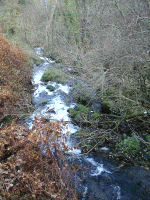
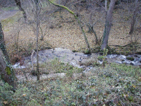

|

Sa vallée d'origine ayant
été comblée il y a 40 000 ans
par la coulée d'un volcan recouvert depuis
par le Puy de Dôme (il y a 10 000 ans), ce
torrent, grossi par le ruisseau de Vaucluse qui
descend de Manson, a creusé un nouveau lit :
la vallée de Royat.
|
La Tiretaine se divise, au niveau du
parc thermal de Royat, en deux bras qui,
après bien des vicissitudes, se jettent dans
deux rivières distinctes : l'Artière
au sud et le Bédat au nord. Les villes de
Clermont et Montferrand seraient construites sur le
delta de la Tiretaine...
|
|
La Tiretaine prend "ses sources"(plusieurs
ruisselets se rejoignent) au bord du socle granitique qui
porte la Chaîne de Dômes, près de la Font
de l'Arbre.

Juste avant les premières maisons de Royat
la Tiretaine a toujours ses allures de torrent.
A ce niveau elle est encore peuplée de
truites.
|